جزء 3 ص 362
ص363
ص364
ص 365
ص366
قال شيخ الإسلام مصطفى صبري رحمه الله في كتابه القيم "موقف العقل و العلم و العالم"، في الجزء الثالث: (ص 365-366): [اعلم، يا طالب الحق، أنه قد أثير حول البراهين -التي كان، و لا يزال من عهد العلم القديم، يُستدل بها على بطلان التسلسل، لا سيما برهان التطبيق، الذي اعتُبر العمدةَ بين تلك البراهين-، شبهاتٌ، و مناقشاتٌ طويلةٌ. حتى قال الشيخ محمد عبده، في تعليقاته على شرح المحقق الدواني، للعقائد العضدية (ص:38): [و جميع ما قالوه في إبطال التسلسل، من البراهين؛ فإنما هو مبني على أوهام كاذبة، و إلى الآن لم يقم برهان خطابي، فضلاً عن يقيني على وجوب تناهي سلسلة اجتمعت أجزاؤها في الوجود، مع الترتيب؛ أو لم يكن كذلك].
و الذي ذكره من "سلسلة اجتمعت أجزاؤها في الوجود، مع الترتيب"؛ و ادعى حتى "عدم وجوب تناهي هذه السلسلة"، هو القسم الذي بطلانه مجمعٌ عليه بين الفلاسفة، و المتكلمين، من أقسام التسلسل.
و هذا كلامٌ لا ينمّ على ما عند قائله من مزيد التهور فقط، بل من النقص أيضاً في الأوصاف الأصلية، اللازمة للغوص في لجج العلوم؛ لأن ما ثبت في العلوم العقلية، يثبت ما يقرب من نصفه بالاستناد إلى بطلان التسلسل، فلو لم يكن لبطلانه أساس غير الأوهام، لضاع نصف تلك العلوم.
و لم يوجد من بلغ في التكلم، حول هذه المسألة، بجرأة زائدة، و روية ناقصة، مبلغ هذا الشيخ المنكر لبطلان التسلسل، و إن لم يندر بين المتأخرين من ناقشوا البراهين المستنبطة في هذا الموضوع بأسماء عجيبة، مثل: "البرهان السلّمي"، و "برهان الترس"، و "برهان المسامتة"، و "برهان التضايف"، و "برهان التخلص"، و "برهان الطفرة"، و "برهان الصُبرة".
و قد جمع العلامة عبد الحي اللكنوي الهندي، من تلك البراهين ما زاد على خمسين في كتاب سماه "أم البراهين"؛ مع الشبهات الموردة على كل منها.
حتى إنه قال في مبحث "البرهان السلمي"، (ص:36): [و لعمري إن هذا البرهان، و البرهان الذي سيأتي ذكره، و برهان التطبيق الذي مر تحريره، كلها غير صافية عن المنوع، و أجوبتها لا تشفي، و لا تغني من جوع].
أقول: فلماذا إذن كتب ذلك الكتاب، الذي ينتهي ما جمع فيه إلى الهباء المنثور، فأضاع أنفاسه، و أوقات قارئيه؟
و لم يأل جهداً في إثارة الشك أيضاً، حول غير ما ذكره هنا من تلك البراهين...].
----------------------------
ثم قال في الحاشية: [حتى إنه لم يعجبه البرهان المنسوب إلى الفارابي، المعروف بالبرهان الأسد الأخصر، و هو على ما في "الأسفار": [إنه إذا كان ما من واحد من آحاد السلسلة الذاهبة بالفعل، مرتبة لا إلى نهاية، إلا و هو كالواحد، في أنه ليس يوجد، إلا و يوجد آخر وراءه من قبل، كانت الآحاد اللامتناهية بأسرها يصدق عليها لا أنها تدخل في الوجود، ما لم يكن شيء من ورائها موجوداً من قبل؛ فإذن بداهة العقل قاضية بأنه من أين يوجد في تلك السلسلة شيءٌ، حتى يوجد شيءٌ ما بعده].
فقال صاحب البراهين: [أقول: سخافته ظاهرة، فإن كل واحد من آحاد السلسلة، و إن صدق عليه، أنه لا يوجد إلا و يوجد وراءه آخر، لفرض الترتيب، لكن لا يلزم منه أن يكون حكم كل الآحاد كذلك، حتى يقال: إنه لا وراء له؛ فلا يوجد السلسلة، فإن من الأحكام ما يجري على الكل الإفرادي، و لا يجري على الكل المجموعي].
و أنا أقول: بل الظاهر، سخافة ما ذكره المعترض؛ و لعله لم يفهم ما قيل في البرهان.
و قد سبق مني في بحث إثبات الواجب، برهانٌ جدير بأن أسميه "البرهان الفعلي"، و أدعي أنه لا يقبل الانتقاض، و الاعتراض؛ و سأعيد ذكره مختصراً، و قد ذكرته قبل عشرين عاماً في كتاب الفقه، باللغة التركية، و كنت أحسبني كاشف ذلك البرهان، حتى رأيت في أثناء اشتغاله بتأليف هذا الكتاب العربي، و انتهائي من تحرير أكثر مباحثه، "أسفار" الشيرازي، و "أم" اللكنوي، و قرأت فيهما برهان الفارابي؛ فإذا هو اختصار برهاني، و من اختصاره، لم يفهمه صاحب "الأم"، فاعترض عليه، و لو فهمه كما يفهم برهاني، لما وجد فيه محلاًّ لاعتراضه السخيف.
و هل يمكن وجود الكل المجموعي، لسلسلة لم يوجد لها الكل الإفرادي؛ أي لم يوجود لها آحاد، تتألف منها السلسلة، حتى يقال: "من الأحكام ما يجري على الكل الإفرادي، و لا يجري على الكل المجموعي"]؛ اهـ.
ص378
ص373
388
المؤلف : محمد جعفر الاسترآبادي المعروف
الكتاب أو المصدر : البراهين القاطعة في شرح تجريد العقائد الساطعة
الجزء والصفحة : ص31-33/ج2
وتقريره : أنّه إذا تسلسلت العلل ولم يكن في الوجود واجب الوجود ، فكلّ واحد واحد ممّا هو فوق المعلول الأخير متّصف بالعلّيّة بالقياس إلى ما تحته ، وبالمعلوليّة بالقياس إلى ما فوقه ، فجميع ما فوق المعلول الأخير متّصف بالعلّيّة والمعلوليّة معا ، والمعلول الأخير متّصف بالمعلوليّة فقط ، فيلزم زيادة عدد المعلوليّة على عدد العلّيّة بواحد وهو محال ؛ لأنّ المتضايفين الحقيقيّين يجب تكافؤهما في الوجود ، فيلزم أن يكون في الوجود موجود متّصف بالعلّيّة فقط ليستقيم التكافؤ الواجب بين عدد العلّيّات والمعلوليّات ، والأمر المتّصف بالعلّيّة دون المعلوليّة باعتبار وجوده في نفسه هو الواجب بالذات ؛ بناء على أنّ العقل يحكم بأنّه يمتنع زيادة عدد أحد المتضايفين على عدد الآخر ، كما يحكم بأنّه يمتنع تحقّق أحد المتضايفين بدون الآخر ولو كان بملاحظة إجماليّة.
ومنها : أنّه ليس للموجود المطلق ـ من حيث هو موجود ـ مبدأ يكون مبدأ لجميع أفراده ، وإلاّ لزم تقدّم الشيء على نفسه ؛ لأنّه لكونه من جملة الموجودات التي هو مبدأ لها يكون مبدأ لنفسه أيضا ، والممكن من حيث هو لا بدّ له من مبدأ يكون مبدأ لجميع أفراده ؛ لكونها في حكم ممكن واحد محتاج إلى العلّة ... فلا يمكن إيجاد أفراد الموجود المطلق وأفراد الممكن ، فلا بدّ من وجود فرد للموجود المطلق غير الممكن وهو الواجب ، فيثبت وجود الواجب بالذات. كذا ذكره المحقّق الخفري. وقال : « وهذا حقيق بأن يكون طريقة الصدّيقين الذين يستشهدون بالحقّ لا عليه ». (1)
ومنها : أنّ كلّ عاقل يحكم بملاحظة ما سبق أنّ جميع الممكنات لا بدّ لها من علّة بالذات ، أي علّة يكون جميع أجزائها متأخّرا عنها ، محتاجا إليها ، وظاهر أنّه إذا كان جزء من أجزاء الممكنات علّة لها بهذا المعنى يلزم تقدّمه على نفسه وعلى علله ، فيجب أن يكون لها علّة خارجة عنها ، وهو الواجب بالذات.
ومنها : أنّه لو لم يتحقّق الواجب ، لم يتحقّق شيء من الممكنات ؛ إذ لا شيء من الممكنات مستقلّ بنفسه لا في الوجود ـ كما هو الظاهر ـ ولا في الإيجاد ؛ إذ المستقلّ بإيجاد شيء هو ما يمتنع بسببه جميع أنحاء عدم ذلك الشيء ، ولا شيء من الممكنات كذلك ؛ لأنّها لجواز عدمها لا يتصوّر كون شيء منها سببا لامتناع عدم شيء آخر ؛ إذ لا وجود ولا إيجاد ، فلا موجود لا بذاته ولا بغيره ، كما لا يخفى.
ومنها : أنّ الممكن الكلّي الموجود في ضمن مصداقه (2) بالبديهة ـ بناء على بداهة وجود الكلّي الطبيعي بمشاهدة انتزاع العقل من المصاديق شيئا مشتركا فيه بالعيان وكون الممكن الكلّي كلّيا طبيعيّا بالنسبة إلى مصاديقه مع كفاية الجوهر الممكن الذي هو جنس الأجناس ـ لا بدّ له من موجد موجود خارج ؛ حذرا عن الترجيح بلا مرجّح ونحوه وهو الواجب ؛ لانحصار المفهوم في الواجب والممكن والممتنع ، وحيث امتنع كون الممتنع موجدا ؛ لعدم وجوده ، وامتنع كون نفس الممكن علّة ؛ لئلاّ يلزم تقدّم الشيء على نفسه ، أو تحصيل الحاصل ، أو كونه بلا علّة ... مضافا إلى [ أنّ ] الممكن ما تساوى نسبة الوجود والعدم إلى ذاته ، بمعنى عدم اقتضاء ذات الممكن شيئا منهما حتّى لا يرد عدم تصوّر نسبة شيء إلى المعدوم ، وعدم تصوّر ترجّح أحدهما مع اقتضاء الذات التساوي تعيّن (3) كون موجده هو الواجب بالذات ، فثبت وجوده وهو المطلوب... .
حاشية على شرح العقائد العضدية لجلال الدين الدواني
تأليف: إسماعيل كالانباوي
https://books.google.jo/books?id=8dFUAAAAcAAJ&dq
Bibliographic information
تـهـافـت الـفـلاسفة
علاء الدين على بن محمد الطوسى الحنفى
ktab INC., Feb 27, 2017 - Philosophy - 410 pages
0 Reviews
يتناول كتاب " تهافت الفلاسفة " لعلاء الدين الطوسي أراء الفلاسفة، ويناقش فكرهم في قضايا كثيرة، كقول بعض الفلاسفة بقدم العالم وأبديته، وقول المليين بحدوثه، وبسطه لأراء الفلاسفة والمتكلمين في المباحث العشرون، ثم مناقشته لقضية إدراك ذات الله، وعلم الله بغيره من الأشياء، وهل لله ماهية غير الوجود، وهل الله بجسم أم لا، ثم التطرق لمسألة علم الله، وهل الله يعلم بغيره أم يعلم بذاته، وهل للفلك نفس ناطقة محركة له بالإرادة أم لا، وعلم نفوس السماوات بأحوال الكائنات، ومعنى اللوح المحفوظ والملائكة المقربين ومعرفة الأنبياء للمغيبات، وهل النفس الإنسانية مجردة، ثم مناقشته لموضوع قدم النفس وحدوثها.... وغيرها من الموضوعات الفلسفية والكلامية القيمة، التي تخص الباحثين والمهتمين بالفكر الفلسفي بوجه خاص، وتخص المهتمين بالفكر الإسلامي بوجه عام.
https://books.google.jo/books?id=HUk3DgAAQBAJ&dq
https://books.google.jo/books?id=RhRfAAAAcAAJ&dq
Bibliographic information
البرهان الاول: برهان التطبيق (من كتاب الدرازي الإمامي)
وهو امّ البراهين وله تقديرات[1369] :
الاول: لو تسلسلت امور مترتبة الى غير النهاية لاي وجه من وجوه الترتيب اتفق كالترتيب الوضعي او الطبعي او بالعلية او بالزمان، وسواء كانت عدداً او زمان او كماً قاراً او معدوداً او حركة او حوادث متعاقبة، فتفرض من حد معين منها على سبيل التصاعد مثلاً سلسلة غير متناهية، ومن الذي فوق الاخير ايضاً سلسلة اخرى، ولا شك في انه يتحقق هناك جملتان احدهما جزء الاخرى، ولا خفاء في ان الاول من احديهما منطبق على الاول من الاخرى، والثاني على الثاني في نفس الامر، وهكذا حتى يستغرق التطبيق كل فرد فرد بحيث لا يشذ فرد، فان كان بازاء كل واحد من الناقصة واحد من الزائدة، لزم تساوي الكل ولجزء وهو محال اولا يكون فقد وجد في الزائدة جزء لا يكون بازائه من الناقصة شيء، فتناهي الناقصة اولاً، ويلزم تناهي الزائدة ايضاً لان زيادتها يقدر متناهية وهو مابين المبدئين، وقد فرضناهما غير متناهيين هذا خلف، واعلم انه لا حاجة في التطبيق الى جذب السلسلة الناقصة او رفع التامة وتحريكهما عن موضعيهما حتى تحصل نسبة المحاذاة بين احاد السلسلتين، ويحصل التطبيق باعتبار هذه النسبة، بل النسب الكثيرة في الواقع متحققة بين كل واحدة من احاد تلك السلسلتين مع احاد السلسلة الاخرى بلا تأمل من العقل فانه للاول من السلسلة الثانية نسبة من الاول الى الناقصة، والخامس من السلسلة الاولى بقطع اسقاط اربعة من اولها، والثاني من الاولى الى السادس من الثانية، وللثالث من الاولى الى السابع من الثانية تلك النسبة بعينها، وهكذا في جميع احاد السلسلتين على التوالي حتى يستغرق، وكذا الاول من السلسلتين موصوف بالاولية، والثاني بالثانوية، والثالث بالثالثية، وهكذا وباعتبار كل من تلك النسب والمعاني تنطبق السلسلتان في الواقع كل جزء على نظيره على التوالي، ولما كان اول الناقصة منطبقاً على اول الزائدة وتاليها على تاليها وهكذا على التوالي كل من نظيره حتى يستغرق الكل، ولا يمكن فوات جزء من البيّن لترتيب الجملتين واتصافهما، فلابد ان يتحقق في الزائدة جزء ولا يوجد في الناقصة نظيره، والا لتساوى الجزء والكل فيلزم انقطاع الناقصة وزيادة الزائدة بقدر متناه، واعترض على هذا الدليل بالنقض بمراتب العدد وكل متناه بمعنى لا يقف كاجزاء الجسم ومثل اللزوم ولزوم اللزوم وهكذا والامكان نظائرهما، فان الدليل يجري فيها.
والجواب: ان غير المتناهي اللايقفي ليستحيل وجود جميع افراده بالفعل لا لاستحالة وجود غير المتناهي، بل لان حقيقة اللايقفية تقتضي ذلك فانه لو خرج جميع افرادها الى الفعل ولو كانت غير متناهية يقف ما فرضنا انه لا يقف، ويلزم في اجزاء الجسم الجزء الذي لا يتجزأ، وفي المراتب العددية ان لا يتصور فوقه عدد اخر وهو خلاف البديهة بل مفهوم الجميع ومفهوم اللايقف متنافيان كما قرروه في موضعه اذا تقرر هذا، فنقول: لعله يكون وجود جميع الافراد خارجاً وذهناً مستحيلاً، نعم يمكن ملاحظتهما اجمالاً في ضمن الوصف العنواني فلا يجري فيه البرهان، وانما يتم النقض لو ثبت ان جميع مراتب الاعداد المستحيلة للخروج الى الفعل موجودة مفصلاً مرتباً في الواقع، وان اورد النقض تحققها في علمه سبحانه .
فالجواب: ان علمه سبحانه مجهول الكيفية لا تمكن الاحاطة به، وانه مخالف بالنوع لعلومنا، وانما يتم النقض لو ثبت تحقق جميع شرائط البرهان في علمه تعالى في المعلومات باعتبار تحققه في هذا النحو من العلم، وهو ممنوع، وفي خبر سليمان المروزي في البداء ايماء الى حلّ هذه الشبهة لمن فهمه.
وقد مر الثاني لو كانت الامور الغير المتناهية ممكنة لامكن وقوع كل واحد من احدى السلسلتين بازاء واحد من الاخرى على سبيل الاستغراق الى اخر الدليل، وهذا التقرير جار في غير المرتبة ايضاً لكنه في المرتبة المتسعة اظهر، ومنع الامكان الذاتي مكابرة، وكيف يتوقف الذكي في ان القادر الذي هو اوحد اولاً ممكنة ان يوجد مرة اخرى مرتباً منطبقاً وان يرتب الغير المرتبة، وانكاره تحكم، ومنعه مكابرة.
الثالث: ما قدره المحقق الطوسي، وهذه به الفاضل الدواني، ولا يرد عليه شيء من الايرادات المشهورة، ويكون الانطباق فيه انطباقاً برهانياً لا مجال لتشكيك الوهم فيه وتقع فيه الزيادة والنقصان في الجملة التي فرض فيها عدم التناهي.
وهو ان يقال: تلك السلسلة المرتبة علل ومعلولات بالنهاية في جانب التصاعد مثلاً، وما خلا المعلول الاخير علل غير متناهية باعبتار ومعلولات غير متناهية باعتبار، فالمعلول الاخير مبدء السلسلة المعلولية، والذي فوقه مبدأ السلسلة العلية، فاذا فرضنا تطبيقهما بحيث ينطبق كل معلول على عليته وجب ان تزيد سلسلة المعلولية على سلسلة العلية بواحد من جانب التصاعد ضرورة ان كل علة فرضت لها معلولية، وهي بهذا الاعتبار داخلة في سلسلة المطول والمعلول الاخير داخل في جانب المبدء في سلسلة المعلول دون العلة فلما لم تكن تلك الزائدة بعد التطبيق من جانب المبدأ كانت في الجانب الاخر لا محالة لامتناع كونها في الوسط لاتساق النظام، فيلزم الانقطاع وان يوجد معلول بدون علة سابقة علية تاماً فانه دقيق، ويجري هذا الدليل في غير سلسلة العلل والمعلولية من الجمل المترتبة، فان كل جملة فان احادها موصوفة في الواقع بالسابقية المسبوقية باي نوع كان من السبق وبغير ما من النسب الواقعية المتضايفة.
البرهان الثاني: برهان التضايف
وتقريره لو تسلسلت العلل الى غير النهاية لزم زيادة عدد المعلولية على عدد العلية، والتالي باطل، بيان الملازمة ان احاد السلسلة اذا اقتطع منها المعلول الاخير يثبت لها وصف المعلولية والعلية ويتكافىء عددهما، لان كل واحد من السلسلة فهو علة لما بعده معلول لما قبله، فالمعلول الاخير لم يثبت له وصف العلية، وقد ثبت له وصف المعلولية فزيد وصف احدهما على الاخر بواحد والتضايف يشترط فيه التساوي، وهذا الدليل جار في كل سلسلة تتحقق فيه الاضافة في كل فرد منها في الواقع لا من حيث اختراع العقل ولكن بشكل جريانه في المقادير المتصلة، فان اثبات الاضافة في كل فرد فرد من الحدود التي فرضت فيه بالنظر الى الواقع مشكل، اللهم الا ان يقال: كل جزء من تلك الاجزاء متصف في الواقع بالتقدم والتأخر، وهما متضايفان حقيقيان، وبه يتم المطلوب اذ يستلزم زيادة وصف المتأخر على مضايفة، ويؤيد ذلك بتصريحهم بان اجزاء الجسم موجودة في الواقع بوجود الكل، وليست القسمة ايجاداً للجزئين من كتم العدم بل تميز وتعيين حد بين الجزئين الموجودين فيه لكنه مبني على الجزء الذي لا يتجزأ، اذ في القسمة يلزم انتهاء الجسم اليه، وفيه ما فيه، ثم ان هذا البرهان جريانه في التسلسل في احد الطرفين ظاهر اما لو كان التسلسل باعتبار المبدأ والمنتهى معاً فجريانه فيه باعتبار اقتطاع معلول من المعلولات المتوسطة بجعله اخراً لما قبله او مبدأ لما بعده، ويجب ان يكون المتضايفان الواقعان في تلك السلسلة متساويين، وحينئذ يتم الدليل ضرورة ان مضايف العلية الواقعة في تلك القطعة هو المعلولية الواقعة فيها لا ما تحت القطعية من الافراد مثلاً، اذا كان زيد علة لعمرو، وعمرو لبكر، فمعلولية عمرو مضايفة هو علية زيد لا غير بل الاثنان منها على التوالي متضايفان، فالمضايف للمعول الاخير المأخوذ في تلك السلسلة هو علية ما قبله اما القريبة فليقابل .
الثالث: برهان العدد والمعدود
وقد ذكره بعض الاذكياء من متأخري المتأخرين، وهو برهان متين، وتقريره انه: لو تحققت امور غير متناهية سواء كانت مجتمعة في الوجود ام لا، وسواء كانت مترتبة ام لا، تحقق لها عدد ام لا، لان حقيقة العدد هي مجموع الوحدات، ولا ريب في تحقق الوحدات وتحقق مجموعها في السلسلة، فيعرض العدد للجملة لا محالة اذ لا حقيقة للعدد الا مبلغ تكرار الوحدات، ويظهر في التأمل في المقدمات ذلك المطلوب ايضاً كما لا يخفى، وكل مرتبة يمكن فرضها من مراتب الاعداد على سبيل الاستغراق الشمولي فهي متناهية لا يمكن فرض مرتبة اخرى فوقها، والا لزم ان يقف مراتب العدد بل هي محصورة بين حاصرين: احدهما الوحدة والاخرى تلك المرتبة المفروضة اخيراً فالمعدود ايضاً، وهو مجموع السلسلة الغير المتناهية ايضاً متناه لانه لا يمكن ان يفرض المجموع بحيث لا يشذ منه فرد الا مرتبة واحدة من مراتب العدد من جهة واحدة، وكل مرتبة يمكن فرضها فهي متناهية كما مرّ، نعم لو امكن فرض جميع المراتب الا يقفيه للعدد، وامكن تصور خروج جميع المراتب الا يقفيه الى الفعل، وامكن عروض اكثر من مرتبة واحدة للعدد للجملة الواحدة من جهة واحدة، امكن عروض العدد الغير المتناهي لهذه الجملة، لكنه محال، لانه لا يمكن اخذ المجموع من الامور الايقفية، ولا يتصور خروج الجميع الى الفعل ولو على سبيل المتعاقب، والا لزم ان يقف، وهذا خلف، وقد التزمه النظام في اجزاء الجسم بل نقول: مفهوم اللايقفية ومفهوم المجموع متنافيان كما قرره في محله، وهذا البرهان واضح المقدمات يجري في المجتمعة والمتعاقبة والمترتبة وغير المترتبة بلا تأمل، وكذا جريان برهان التطبيق والتضايف ظاهر بعد الرجوع في المقدمات الممهدة النظر الجميل في التقريرات السابقة، وذهب المحقق الطوسي (رحمه الله) في التجريد[1370] الى جريان التطبيق والتضايف فيها، وقال في نقد المحصل بعد تزئيف ادلة المتكلمين على ابطال التسلسل في المتعاقبة، فهذا حاصل كلامهم في هذا الموضع.
وانا اقول: ان كل حادث موصوف بكونه سابقاً على ما بعده ولاحقاً بما قبله، والاعتباران مختلفان، فاذا اعتبرنا الحوادث الماضية المتبدأة من الان تارة من حيث كل واحد منهما سابق، وتارة بحيث هو من عينه لاحق كانت السوابق واللواحق المتباينان بالاعتبار متطابقتين في الوجود لا نحتاج في تطابقهما الى توهم تطبيق، ومع ذلك يجب كون السابق اكثر من اللواحق في الجانب الذي وقع النزاع فيه، فاذا اللواحق متناهية في الماضيين لوجوب انقطاعهما قبل انقطاع السوابق، والسوابق زائدة عليها بمقدار متناه، فتكون متناهية ايضاً انتهى[1371] .
واعترض عليه: بان في التطبيق لابد من وجود الاحاد على نحو التعدد والامتياز اما في الخارج فليس، واما في الذهن فكذلك لعجز الذهن عن ذلك، وكذا لا يمكن للعقل تحصيل الامتياز، ووجود كل واحد في الاوقات السابقة على زمان التطبيق لا يقيد لانه يرجع الى تطبيق المعدوم، فان الوجود ضروري عند التطبيق، وايضاً لابد في الانطباق من وجود مجموع الاحاد، وذلك المجموع لا يمكن وجودها لان ذلك المجموع لم يكن موجوداً قبل الحادث الاخير وبعده لم يبق شيء منه وجوداً، والقول بوجودها في مجموع الاوقات على سبيل التدريج كالحركة القطعية، يدفعه ان وجود الكل في جميع الاوقات على هذا النحو يستلزم وجود الكل بدون شيء من اجزائه، وفيه بحث اذ يكفي لوجود هذا الكل وجود اجزائه في اجزاء زمان الكل انتهى[1372] .
والتحقيق: ان الموجود قد يوجد في طرف الزمان وهو الدفعيات، وقد يوجد في نفس الزمان وهو التدريجات، والامور التدريجية مجموعها موجودة في مجموع زمان وجودها على سبيل الانطباق، وليس المجموع موجداً في ابعاض الزمان، ولا في آن من الانات، فان سئل الحركة في اليوم، هل هي موجودة في آن من آنات اليوم المفروض او شيء من ساعاته؟ فالجواب: انها ليست بموجودة اصلاً بل في مجموع اليومين، وقد بيّن ذلك بوجه شاق، وانطباق الحوادث المتعاقبة الزمانية بعضها على بعض من قبيل الثاني، فالتطبيق موجود في كل الزمان لا في آن، وآن والانطباق حكمه حكم المنطبقين كانطباق الحركة على الزمان، وانطباق الحركة على المسافة، وهذا ظاهر الا ترى ان الكرة المدحرجة على خط مستو تنطبق دائرة من محيط الكرة على المسافة جزماً، وانطباقها لا يمكن ان يكون في آن، لانه لا يمكن ان يكون التماس بين المستدير والمستوي، فظهر ان انطباقها تدريجي في كل الزمان او لا تعلم ان الحركة والزمان متطابقان تدريجاً في كل زمان حركة، ولو لم ينطبق الزمان على الحركة لم يكن مقداراً لها سواء كانا موجودين في الخارج ام لا، ويمكن الجواب ايضاً على القول بعدم وجود الزمانيات بانه لا شك ان الاحاد المتعاقبة من احدى السلسلتين منطبقة في الواقع على احاد السلسلة الاخرى التي كانتا هما معاً في الوجود في ازمنة وجودهما، وان لم يكونا موجودين حال حكمنا، ووجودهما حال الحكم غير لازم في جريان البرهان بل وجودهما حال الانطباق، وليس من قبيل تطبيق المعدوم على المعدوم بل من قبيل الحكم على انطباق المعدوم في حال الحكم على المعدوم الموجودين معاً في حال الانطباق، وذلك مثل سائر الاحكام الصادقة على سائر الاحكام الصادقة على الامور الماضية، وقيل ايضاً: ان التطبيق يتوقف على الترتيب وهو يتوقف على تحقق اوصاف ونسب واضافات يسلكها في سلك الترتيب وفي المتعاقبة لا يوجد ذلك، فان فيما عدى الحادث الاخير لا يوجد شيء من طرفي النسبة وفي الحادث الاخير لا يوجد الا طرف واحد، فلا تتحقق النسبة ايضاً ضرورة انها فرع المنتسبين.
فان قلت: لعل الاتصاف في الذهن كما قالوا في اتصاف الزمان بالتقدم والتأخر. قلت: لما كانت الحوادث لا نهاية لها فلا يمكن التفصيل في الاذهان والمباديء العالية والموجود والاجمالي غير كاف لعدم الامتياز فيه انتهى.
والجواب: انه يجزم العقل بان حوادث زمان الطوفان في الخارج قبل حوادث زمان البعثة وقبل الحادث اليومي بلا ريب، ولا يتفرع على اعتبار العقل، كيف وهم معترفون بانّ الحادث المتقدم علّة معدة للحادث المتأخر للعلية والمعلولية والخارجية، فان العلة ما لم توجد في الخارج من حيث انها علة لم يوجد المعلول في الخارج وهما متضايفان، فظهر ان النسبة بين العلية والمعلولية متحققة بين المعلول والعلل المعدة ووجودها السابق وعدمها علة فتحققت النسبة بين الموجود والمعدوم، والحق ان طرفي النسبة لا يمكن ان يكونا معدومين بالعدم المطلق، واذا تحققا نوع تحقق، وان لم يجتمعا في الوجود، فان العقل يجوز تحقق النسبة بينهما ولم ينقبض عنه، ومن تصور حقيقة وجود الاعراض التدريجية تصور كبقية النسبة بين اجزائهما المتعاقبة وقل استبعاده واذعن بها، ثم ان النسبة في التقدم والتأخر بين اجزاء الزمان في الواقع من غير فرعية ولا اعتبار العقل وتصوره واتصافها بالصفات الثبوتية، والحكم بالاحكام على النفس الامرية بل الخارجة المستلزمة لثبوت المثبت له في الواقع مما لايشك فيه احد، وليس من الاحكام المتفرعة على اعتبار العقل الحاصلة بعد فرضه، وليس بحاصل بالفعل الا بعد الفرض فانه لو كان كذلك لكان حكم العقل بان هذا الجسم متقدم وذاك متأخر في الخارج من الاحكام الكاذبة لانه في الخارج ليس كذلك في الحقيقة الا ترى انه يصح الحكم على الذوات[1373] بغير المتناهية من الحركة والزمان بالتقدم والتأخر والقسمة والاسراع الاجمالي غير كاف لاتصاف كل جزء بالتقدم والتأخر والتفصيل يعجز عنه العقل عندهم، فكيف تكون هذه الاتصافات بعد فرض الاشياء كما ذهبوا اليه، وقد ذهبوا اليه، وقد ذهب بعض المحققين في جواب شك من قال لما اتصف هذا الجزء من الزمان بالتأخر، وذاك بالتقدم الى ان هذه الاتصافات مستندة الى هويات الاجزاء وتشخصاتها الحاصلة لها فكما انه لا يصح السؤال بان زيداً لم صار زيداً وعمرواً عمرواً، لا يصح السؤال لم صار أمس أمس واليوم اليوم، وذهبوا ايضاً الى ان اختلاف اجزاء الفلك بالقطب والمنطقة مستند الى هوية الاجزاء ليس بفرض الفارض بل موجودة فيه حقيقة لكن الاجزاء وهوياتها موجودة بوجود الكل بوجود واحد، وكما ان اجزاء الجسم وتشخصاتها موجودة بوجد الجسم بوجود قار، كذلك اجزاء الزمان والحركة موجودة بوجود الكل بوجود تدريجي بلا تفاوت، والمناقشة في هذه ناشئة من عدم تصور الوجود التدريجي كما ينبغي، فلا ينافي اتصال الزمان والحركة اذا كانت موجودة بوجود واحد، فان هذا النوع من الاختلافات لا يستلزم القسمة بالفعل والانفصال بعد الاتحاد بوجود الكل، ثم انهم صرحوا قاطبة بان الصفة لا يجب تحققها في طرف الاتصاف والمحكوم به لا يجب وجوده في الحكم مع انه نسبة، وذهبوا ايضاً الى تساوي نسبة الممكن الى طرفي الوجود والعدم والى صحة الاتصاف بنحو العمى من الامور العدمية في الخارج، الى غير ذلك من النظائر، ولا يخفى انه يمكن اجراء جميع ما ذكرناه في جريان هذا الدليل في المتعاقبة في جريان سائر البراهين فيها فلا نطول زمام الكلام بالتعرض لخصوص كل منها .
البرهان الرابع
اورده الشيخ الكراجكي في كتابه كنز الفوائد بعض ما اورد برهان التطبيق بوجه مختصر انيق سهل المأخذ، والطريق مشتمل على طريق التدقيق، قال: دليل اخر على تناهي[1374] ماض وهو انه قد مضت ايام وليال وقفنا اليوم عند اخرها، فلا يخلو من ان تكون الايام اكثر عدداً من الليالي او الليالي من الايام او يكونا في العدد سواء، فان كانت الايام اكثر من الليالي تناهت الليالي، لانها اقل منها، واقتضى ذلك تناهي الايام ايضاً لبطلان اتصالهما قبل الليالي بغير ليال بينهما، فوجب على هذا الوجه تناهيهما معاً، وان كانت الليالي اكثر من الايام كان الحكم فيهما نظير ما قدمنا من تناهي الاول، فتناهي الايام لزيادة الليالي عليها، ويقتضي ذلك تناهي الليالي كما مر، فيلزم تناهيهما معاً، وان كانت الايام والليالي في العدد سواء كانا بمجموعهما اكثر عدداً من احدهما بانفراده، وهذا يشهد تناهيهما اذ لو كان كل واحد منهما في نفسه غير متناه ما تصورت العقول عدداً اكثر منه، وقد علمنا ان الايام مع الليالي جميعاً اكثر عدداً من احدهما، وهذا موضح عن تناهيهما، وبهذا الدليل نعلم ايضاً تناهي جميع ما مضى من الحركات والسكنات ومن الاجتماعات والافتراقات ومن الطيور والبيض والشجر والحب وما يجري مجرى ذلك انتهى[1375] .
ثم اعلم انه يمكن ابطال ما ادعوه من التسلسل في الامور المتعاقبة بل في غير المترتبة بوجوه اخرى لابأس بذكر بعضها:
الوجه[1376] الاول: منها انهم قالوا: بالحوادث الغير المتناهية التي كل سابق منها عدة معدة للاحق على سبيل الاستغراق وان ايجاد الواجب تعالى لكل منها مشروط بالسابق تحقيقاً للاعداد وتصحيحاً لارتباط الحادث بالقديم، وانه تعالى ليس بموجب تام لواحد منها، اذا تقرر هذا، فنقول: لو تسلسلت المعدات على ما ذهبوا اليه لا الى نهاية لزم ان يكون وجوب كل واحد منها وجوباً شرطياً بمعنى انه لم يجب كل منها بشرط وجوب سابقه ولا ينتهي الى الوجوب القطعي البت الذي يكون تعالى موجباً له لذاته بدون شرط، لانه عندهم انه تعالى ليس بموجب تام لكل واحد من المعدات بل الحوادث مطلقاً، وتأثيره تعالى في كل منها موقوف على تأثيره في معد سابق عليه لا الى نهاية، فوجوب كل منها وجوب شرطي لا يجب حتى يجب سابقه، والوجوب الشرطي غير كاف لتحقق واحد منها، فانه بمنزلة قضايا شرطية غير متناهية مقدم كل لاحق تال لسابقه، فان ما لم يتناهي الى وضع مقدم لم ينتج شيئاً ولو توقف تأثير الواجب في كل حادث وايجاده اياه على ايجاد حادث اخر او لم تجب لذاتها تلك الايجادات لكن لا يجوز للواجب ترك ايجاد الحوادث بالكلية، كما لم يمتنع هذا الاحتمال في نفس الامر لم يجب واحد منها في الواقع، لان وجوب كل حادث انما هو بشرط ايجاد حادث اخر، وهكذا والكلام في ترك الايجاد رأساً وما لم يمتنع جميع انحاء ارتفاعاته وعدماته في الواقع لم يجب وجوده، وتوهم بعضهم انه لا يمكن ارتفاع جملة الحوادث لاستلزامه ارتفاع الطبيعة القديمة المشددة بلا شرط الى الواجب تعالى شأنه، وهو مردود بانا لا نسلم استناد الطبيعة بلا شرط الى الواجب جل شأنه، لان الطبيعة عندهم اذا كانت ذاتية لما تحتها فانما هي مجعولة يجعل ما هي ذاتية له جعلاً واحداً، ولا يمكن تعلق جعل على حدة للطبيعة الكلية قطعاً، وجعل كل فرد من افراد الطبيعة عندهم انما هو بشرط سبق معد، نعم لو تحقق تأثيره منفرد في الطبيعة ولا تأثير في الافراد لوجب ان يكون التأثير من الواجب فيها اما ابتداء او بواسطة قديمة، وتاثير الواجب في القديم بلا واسطة او شرط او بواسطة قديمة، انما هو منشأ استحالة انعدام القديم عندهم، فظهر ان سلسلة الحوادث تجب ان تنتهي الى حادث يجب وجوده عن الواجب بلا شرط معه فتنقطع سلسلة الحوادث به، لانه لا يجوز تقدم شرط ومعد للحوادث عليه، وكذا يمكن اجراء كثير من براهين اثبات الواجب التي لا تتوقف على ابطال الدور والتسلسل هنا بادنى تصرف لا يخفى على الفطن اللبيب، فان تاثير الواجب تعالى عندهم في كل حادث يتوقف على معدّ ووجود الواجب مع عدم المعدي في حكم قوة فرض عدمه تعالى والعياذ بالله في عدم التأثير، والعلة التامة عندهم هو الواجب مع المعدي ومجموع المركب من الواجب والممكن ممكن، فالعلل التامة لجميع الحوادث الغير المتناهية ممكنات، فكما لا ينفع التزام التسلسل في مسألة اثبات الواجب ما ينفع التزامه هنا ايضاً، اذ الادلة الدالة على اثبات الواجب بدون التمسك لابطال التسلسل تجري هنا ايضاً بادنى تفاوت .
الوجه[1377] الثاني: ان نقول: على تقدير تسلسل الحوادث على سبيل التعاقب يلزم ان يتقدم على كل حادث من الحادث على سبيل الاستغراق عدم ازلي بحادث حادث، فالحادث الاول والثاني يجتمعان في العدم اذ لو وجد في الواقع مرتبة من المراتب كانا معدومين فيها واجتمع معهما عدم الحادث الثالث، ضرورة ان عدم كل حادث ازلي، وان عدم الحادث المتأخر وان كان اطول امداداً من الحادث المتقدم، الا ان الكل متحقق من طرف الزمان اذ طبيعة الزمان ازلية عندهم، والاعدام كلها ازلية فلابد من اجتماعهما قطعاً في زمان ما ويجتمع مع هذه الاعدام الثلث عدم الحادث الرابع فهكذا على ترتيب الاحاد على التوالي فاما ان يستغرق هذا الاجتماع اعدام جميع الاحاد فيكون جميع الحوادث معدوماً في مرتبة ما من المراتب الواقعية فتأخر جميع الحوادث عن تلك المرتبة ويكون الجميع معدوماً في تلك المرتبة فيكون لها مبدأ وانقطاع، وهو المطلوب وان لم يستغرق فينتهي الى حادث معين لا يجتمع عدمه مع عدم ما قبله من الحوادث، اما لان هذا الحادث لا يسبقه عدمه فيكون قديماً بالشخص، واما لان الحادث الذي قبله لا يسبقه عدم ازلي فيكون ذلك قديما، ضرورة انه لو تقدمهما عدم ازلي يجب اجتماعهما مع ما تأخر عنهما فتنقطع سلسلة الحوادث على اي تقدير، لا يقال: كل جملة متناهية تجتمع في العدم ويتحقق عدم سابق على الجميع، واما جملة الحوادث الغير المتناهية، فلانا نقول: قد بيّنا ان هذا الحكم مستغرق لجميع الاحاد على التوالي، وقد مر في المقدمات الممهدة ان امثال هذه الاحكام على كل فرد تسري الى الجملة، فلا مجال لهذا التوهم، ولك ان تقول: هاهنا سلسلتان احديهما سلسلة وجدان الحوادث والاخرى سلسلة عدماتها، فاذا اخذنا مجموع الوجودات يجب لا يشذ عنها فرد فكذا العدمات فلا شك ان جملة العدمات بحيث لا يشذ فرد متقدمه على جميع الوجودات لتقدم كل فرد منها على نظيره وعديله، ومثل هذا الحكم يسري من الاحاد الى الجملة، ولان جملة العدمات لما كان كل فرد منها ازلياً فالجملة ازلية، وجملة الحوادث حادثة وتقدم الازلي الحادث ضروري ولا شبهة في امكان اخذ المجموع بحيث لا يشذ عنه فرد فانه ليس من قبيل الجعلة الايقافية الذي لا يمكن فيها اخذ المجموع بحيث لا يشذ، وقد اخذوا جملة الممكنات في دليل اثبات الواجب فيكون ممكناً، فلا يكون في تلك المرتبة شيء من الحوادث وهي الانقطاع، ولنا ايضاً ان نقول: يتقدم على كل حادث عدم ازلي هو عدم لهذا الحادث، وينعدم معه جميع ما بعده من الحوادث التي هو معد لها، وسبق هذا العدم يستوعب جميع احاد سلسلة الحوادث، وحكم الاحاد يسري الى الجملة فيلزم عدم مجموع الحوادث رأساً وانقطاعها أو نقول: مجموع الحوادث واحد شخصي لان كل جزء منه واحد شخصي وحادث ايضاً، لان جميع اجزائه حادث، فيلزم الانقطاع او نقول ايضاً: السلسلة المذكورة معدات عندهم، والمعد يعتبر وجوده وعدمه في المعلول المتأخر، وكلاهما سابق عليه فنأخذ سلسلات العدمات اللاحقة السابقة على وجود المعلولات، ونقول: اما ان يستغرق سبق كل احد من العدمات لكل فرد من وجود الحوادث النظير على النظير، فيلزم تقدم جملة العدمات اذا اخذت بحيث لا يشذ منها شيء على سلسلة وجودات الحوادث، وهو يستلزم الانقطاع وتقدم عدم اللاحق على الموجود، هذا خلف، وان لم يستغرق فينتهي الى فرد لا يسبقه عدم المعد فتنقطع سلسلة المعدات، وعلى هذه التقديرات لا يتوجه ما قيل: ان الاول ليس وقتاً محدوداً تجتمع فيه العدمات بغيرها بل مرجعه الى ان قبل كل حادث حادث الى غير النهاية، وهكذا عدم الحوادث ولا محذور فيه، لان اجتماع العدم الازلي الغير المتناهي في الماضين في زمان مع عدم تناهي الزمان عندهم مع مثله بالغاً ما بلغ سوى كانت الاعداد متناهية ام لا بديهي، ولا يلزمنا تعيين زمان معين للازل، وكذا ما قيل: ان تحقق في الازل عدم الحوادث لكن عدم كل حادث مقرون بوجود حادث تقدم على ذلك الحادث ابداً فلا يتحقق وقت ينتفى فيه جميع الوجودات، ويبقى صرف العدم، وهذا مع انه مدفوع بما قررنا وهو فساد اخر نشأ من عدم تناهي الحوادث اذ جميع المفاسد التي ذكرنا انما نشأت من الحوادث الى غير النهاية، ويمكن ان يقال ايضاً: ان الحادث اليومي سبق بعدم معده، وبعدم معد معده وهكذا الى غير النهاية، وعدم المعد البعيد بواسطة اطول امتدادا من عدم المعد القريب، والمعد البعيد بواسطتين اطول منهما، والمعدّ الابعد بثلاث وسائط اطول من الثلاثة، وكل ما تمتد سلسلة المعدات يتزايد امتداد الاعداد اللاحقة للمعدات، فلو ذهبت السلسلة الى غير النهاية لزم ان يمتد العدم اللاحق لا الى نهاية مع ان عدم اللاحق مسبوق بوجود المعد، واستحالته ظاهرة، وهذا برهان لطيف قوي لا يرد عليه ما يرد على برهان السلم لانه جميع الاعدام الغير المتناهية جزء العلة التامة للحادث اليومي متحققة في الواقع مجتمعة ووجودات المعدات متحققة في الواقع متمايزة بخلاف برهان السلمي لان ازدياد الانفراد هنا على سبيل اللايقف وموقوف على فرض التقاط في الساقين، وقال بعض المحققين: ان الامور المتناهية مطلقاً تستلزم الامور الغير المتناهية المترتبة، ويلزم منه تناهي النفوس وحدوثها على بعض الوجوه كما سلف بيانه، وهو ان المجموع متوقف على المجموع، واذا اسقط منه واحد، وذلك المجموع على مجموع اقل منه واحد وهكذا الى غير النهاية فيجري التطبيق والتضايف بين المجموعات الغير المتناهية، وهي امور موجودة مترتبة. حسن بن الشيخ حسين ولي الاحكام، وجرى ذلك بسلخ شهر شعبان المعظم تمام السنة الرابعة بعد الخمسين والمائتين والالف من الهجرة النبوية(صلى الله عليه وآله) وحرر بقلم العبد المذنب الحقير محمد بن ابراهيم، بلغ المقابلة والتصحيح بقدر الطاقة والاطلاع في جملة ايام عددها ستة وثلاثون يوماً وكان اخر ذلك ساعة الخامسة من ليلة الحادي عشر بشهر ذي الحجة سنة 1254 هـ ق .
https://books.google.jo/books?id=Np9MCwAAQBAJ
https://www.facebook.com/AnsarAlflsft/posts/246867488788300 أنصار الفلسفة - Facebook
لسنة الثالثة
المادة العلمية لمطلوبة في امتحانات الفصل الثاني العام الدراسي 2012/2013
مقرر الفلسفة العامة ف2 س3 جزء الدكتور صالح شقير
الباب الثالث: مشكلة المعرفة من الفصل السادس حتى الفصل الثامن ضمناً
مقرر الفلسفة العامة ف2 س3 جزء الدكتور حمد حمد
الباب الثاني: مشكلة الميتافيزيقا
المطلوب من صفحة رقم 117/ إلى صفحة رقم 144/
مقرر الإبيستمولوجيا ف2 س3 جزء الدكتورة انصاف حمد
- الباب الثالث من كتاب مناهج البحث في العلوم الطبيعية الجزء الثاني بكافة فصوله ما عدا :
( الفصل الثاني - الفصل الثالث - الفصل العاشر ) محذوف
مقرر الإبيستمولوجيا ف2 س3 جزء الدكتور فاطمة درويش
- الباب الثاني مناهج البحث في العلوم الطبيعة الجزء الثاني بأبوابه الستة أي من ص 94 إلى ص 173
ـــــــــــــــــــــــــــــــــــــــــــــــــــــــــــــــــــــــــــــــــــــــــــــــــــــــــــــــــــــــــ
مقرر الفلسفة الحديثة ف2 س3 جزء الدكتورة منيرة محمد
الفصل الثاني المطلوب أ- هيغل 1-كانط , فخته , شلنغ ,كانط, سبينوزا 2- سوابق الجدلية( أفلاطون , هرقليطس,أرسطو, جاكوب بوهمي, مذهب وحدة العقل والطبيعية , هيغل والديكارتيون الروحانية والمادية ) 3- الموضوعات الأساسية في المذهب الهيغلي( المثالية الهيغلية , الفكرة والتصور, الفكر والكلي )4- المنطق : نظرية الوجود + نظرية الماهية -5- نظرية الفكر الشاملة-6- فلسفة الطبيعة -8- الروح الذاتي
ب- نيتشة : انقلاب القيم ( المقدمة+ الإنسان خالق القيم + بمعزل عن التفاؤل والتشاؤم ) من ص 5066 إلى ص 512, المعرفة والحياة ( المقدمة + فكرة الحقيقة من ص516 إلى ص520) المعرفة والحياة(المقدمة+اللامعقول في المعرفة من ص522 إلى ص528) - نقد نيتشة الأخلاق السائدة( من ص 541 إلى 546 ملاحظة المقدمة تؤخذ من فكرة اللا أخلاقية عند نيتشة - أخلاق السادة وأخلاق العبيد من ص 550- إلى 554 ملاحظة المقدمة تؤخذ من فكرة اللا أخلاقية عند نيتشة- إرادة القوة من ص 561 إلى ص 565 ملاحظة المقدمة تؤخذ من فكرة اللا أخلاقية عند نيتشة
ـــــــــــــــــــــــــــــــــــــــــــــــــــــــــــــــــــــــــــــــــــــــــــــــــــــــــــــــــــــــــــــــــــــــــــــــــــــــــــــــــــــــ
مقرر الفلسفة الحديثة ف2 س3 جزء الدكتورة سوسان الياس
1- فلسفة كانط -2- فلسفة كيركيجارد ( النظر ي)
حلقة بحث : الموضوعات المطلوبة :
كل ما يتعلق بفلسفة - كانط . كيركيجارد , ماركس – فلاسفة العصر الحديث من القرن الثامن عشر حتى نهاية القرن التاسع عشر
- فلاسفة التنوير – الفلسفة المثالية الألمانية - التجريبية الإنكليزية
المادة العلمية لمطلوبة في امتحانات الفصل الثاني العام الدراسي 2012/2013
المطلوب لمقرر الفلسفة العربية ف2 س3 جزء الدكتورة هيفرو ديركي
البحث الأول : المدارس الفلسفية, نشأتها وتطورها. 1_ مدرسة الإسكندرية. 22_الفكر السرياني. 3_النصرانية. 4_ مدرسة أنطاكية. 5_ مدرسة الرها ونصيبين. 6_ مدرسة جنديسابور. 7_ مدرسة حران. 8_ الفلسفة عند السريان البحث الثاني: 1_ أصل إخوان الصفا. 2_ نظام إخوان الصفا ومراتبهم. 3_ رسائل إخوان الصفا. 4_ فلسفة إخوان الصفا : أ_ المنطق. ب_ نظرية المعرفة. ج_ الرياضيات. – د - نظرية الفيض. هـ_ النفس الإنسانية
البحث الثالث: الفارابي : 1_ لمحة عن حياة الفارابي. 2_ آثار الفارابي. 33_معرفة الفارابي للفلسفة اليونانية. 4_ التوفيق بين رأيي الحكيمين أفلاطون وأرسطو- 5 - فلسفة ما بعد الطبيعة عند الفارابي : أ_ الموجود من حيث هو موجود. ب_ الواجب والممكن. ج_ إثبات وجود واجب الوجود. د_ صفات واجب الوجود. هـ_ نظرية الفيض
_ موقف المفكرين من هذه النظرية والمآخذ عليها -6- نظرية المعرفة عند الفارابي. _ نظرية النبوة عند الفارابي. – 7- الأخلاق والسياسة: أ_ العلم المدني السياسي. ب_ المدينة الفاضلة.-ج - المدن الشريرة أو مضادات المدن الفاضلة. د_ قيمة المدينة الفاضلة.- هـ- نقاط التشابه والاختلاف بين جمهورية أفلاطون والمدينة الفاضلة عند الفارابي.
ـــــــــــــــــــــــــــــــــــــــــــــــــــــــــــــــــــــــــــــــــــــــــــــــــــــــــــــــــــــــــــــــــــــــــــــــــــــ
المطلوب لمقرر الفلسفة العربية ف2 س3 جزء الدكتورة رائدة الدالي :
الكندي:1- تحديد الفلسفة عند الكندي – 2 حجة الكندي في الدفاع عن الفلسفة - مصطلح القنية -3- موضوع علم ما بعد الطبيعة عند الكندي: الأزلي , الواحد - 4-اثبات استحالة وجود جسم لا نهاية له – 5- النفس – 6- العقل .
ابن سينا: 1- موضوع الميتافيزيقا عند ابن سينا.( الموجود بما هو موجود ) -2- معنى الموجود.- 33- إدراك الموجود:-أ-النفس وإدراك الموجود.- ب- العقل وإدراك الموجود: مراحل الإدراك: - الإدراك العقلي :- 1- المعقولات الأولى (المقولات العشر) – 2- المعقولات الثانية .( أقسام الموجود )
ــــــــــــــــــــــــــــــــــــــــــــــــــــــــــــــــــــــــــــــــــــــــــــــــــــــــــــــــــــــــــــــــــــــــــــــــــــــــــــــــــ
المطلوب لمقرر علم الكلام ف1 س3 جزء الدكتورة هيفرو ديركي
__ الباب الثالث : نماذج من المشكلات التي عالجها الفكر العربي وعلم الكلام
_ الفصل الأول : مشكلة خلق العالم في القرآن الكريم : أ_ خلق العالم المحدث:11_ خلق العالم المحدث عند الباقلاني. 2_ إثبات حدوث العالم عند الجويني 3_ ابن حزم وبراهين إثبات حدوث العالم: 1_ برهان تناهي العالم أو برهان التناهي في الكم المتصل 2_ برهان الكم المنفصل أو العدد-3- برهان الزيادة والنقصان أو برهان الأكثر والأقل . أو (( برهان يزيد في الخلف ما يشاء ))- 4- برهان الخُلف. 5_ برهان التضايف .
ب_ خلق العالم القديم : _ المعتزلة ومسألة قدم العالم._أدلة الفلاسفة على قدم العالم ونقد الغزالي لهذه الأدلة: _ نقد النقد – ج _ الخلق المستمر ومكانة القول بالجوهر الفرد – د- الخلق بالفيض ( الفيض الأفلوطيني_الفيض أو صدور الموجودات عن واجب الوجود عند الفارابي وابن سينا). هـ_الخلق بالكمون . و_ الخلق بالتجلي .
_الفصل الثاني:مشكلة العلم الإلهي . _مسألة الصفات ومذاهب المتكلمين فيها . _ مذهب المعتزلة والشيعة _ مذهب الأشاعرة . _ العلم الإلهي بالممكنات . _ الفلاسفة . _ رد الغزالي على الفلاسفة . _ رد ابن رشد على المتكلمين والغزالي . _ كيف يعقل الباري الحوادث برأي ابن رشد .
ــــــــــــــــــــــــــــــــــــــــــــــــــــــــــــــــــــــــــــــــــــــــــــــــــــــــــــــــــــــــــــــــــــــــــــــــــــــــــ
المطلوب لمقرر علم الكلام ف1 س3 جزء الدكتورة رائدة الدالي
1- علم الكلام وتعريفاته: . وظيفة علم الكلام، غايته.
22- نشأة علم الكلام.: التحديات التي واجهت علم الكلام- الشبهات (الاعتراضات) التي تصدى لها علم الكلام. الصراع الفكري وبدايات علم الكلام: 1- الجبرية (الجعد ابن درهم- الجهم ابن صفوان).2- القدرية (غيلان الدمشقي). , الفرق الدينية وتطور المذاهب الكلامية: 1- الحشوية - 2- - الحنبلية
33 الأشاعرة: أ-نظرية الكسب عند الأشعري. بــ- الصفة والمفهوم (الصفات عند الأشعري) ج- خلق القرآن(كلام الله) موقف ابن حنبل- موقف المعتزلة- موقف الأشعري.
4 الماتريدية: حرية الإنسان (الكسب) 5- المعتزلة: الأصول الخمسة عند المعتزلة
السنة الثالثة
المادة العلمية لمطلوبة في امتحانات الفصل الثاني العام الدراسي 2012/20133 لطلاب السنة الثالثة / مقررات الفصل الأول /
المطلوب لمقرر الفلسفة الحديثة ف1 س3 جزء الدكتورة منيرة محمد
- ميشيل دي مونتي - برونو. -
- ديكارت: - مبحث 1: العقل والمنهج -- مبحث22: الشك والتفكير (الشك الجذري، الكوجيتو، ماهيتي)- مبحث3: (الأدلة على وجود الله بفكرة الكمال غير المتناهي ،الدليل الانتولوجي) - .مبحث4: الحرية والاستعمال السليم للعقل( مسؤولية الخطأ، الوضوح التام والحرية ص63-64 + فكرة التشتت) - مبحث 5: الإنسان والعالم ( الثنائية الديكارتية + اتحاد النفس بالجسد).
- لايبنتز: - مبحث 1: معنى الجوهر عند لايبنتز، الأسس الثلاثة التي يقوم عليها، كيف شرح لايبنتز نظريته في الجوهر بالاعتماد على المنطق والميتافيزيقيا ص83-88. - مبحث2: معنى الجوهر عند لايبنتز، الأسس الثلاثة التي يقوم عليها، بماذا تتشابه الجواهر، أنواع الجواهر، ص83-84، ص89-90، ص96-97.- مبحث3: الامتداد والمادة ص 90 منتصف 95. - مبحث 4: الله ، البراهين على وجود الله ص100-104 - مبحث 5: علاقة النفس بالجسد أو الانسجام المسبق، وكيف حلت بالقياس إليها مشكلة الحرية عند لايبنتز ص107-113.اسبينوزا:- مبحث1: الطبيعة والله - مبحث2: المادة والعقل. - مبحث3: العقل والأخلاق. - مبحث4:السياسة عند اسبينوزا
ــــــــــــــــــــــــــــــــــــــــــــــــــــــــــــــــــــــــــــــــــــــــــــــــــــــــــــــــــــــ
المطلوب لمقرر الفلسفة الحديثة ف1 س3 جزء الدكتورة سوسان الياس
الفلاسفة التجريبيون : 1- جون لوك - 2- جورج باركلي – 3- ديفيد هيوم -4- بحث آفاق الفلسفة الحديثة
ــــــــــــــــــــــــــــــــــــــــــــــــــــــــــــــــــــــــــــــــــــــــــــــــــــــــــــــــــــــــــــــــــــــــ
المطلوب لمقرر ابيستمولوجيا ف1 س3 جزء الدكتورة فاطمة درويش
- الفصل الأول والثاني والثالث من الكتاب المقرر - فصل التفكير النقدي من ص 7 إلى ص733 من كتاب العقل العربي ومجتمع المعرفة ( الجزء الثاني ) مظاهر الأزمة واقتراحات بالحلول
ملاحظة هامة : مطلوب لحلقة البحث كتاب العقل العربي ومجتمع المعرفة كاملاً
المطلوب لمقرر ابيستمولوجيا ف1 س3 جزء الدكتورة إنصاف حمد
الفصل الرابع والخامس والسادس من الباب الأول من كتاب " مناهج البحث في العلوم الطبيعية الجزء الثاني + المحاضرات الإضافية بعنوان : " اتجاهات معاصرة في فلسفة العلم "
ـــــــــــــــــــــــــــــــــــــــــــــــــــــــــــــــــــــــــــــــــــــــــــــــــــــــــــــــــــــــــــــــــــــــــــــــ
المطلوب لمقرر الفلسفة العامة ف1 س3 جزء الدكتور حمد حمد
الموضوعات التالية : الفصل الأول : الباب الأول – مشكلة الفلسفة
من ص 15 حتى ص 61 و من ص 79 حتى 106
المطلوب لمقرر الفلسفة العامة ف1 س3 جزء الدكتور صالح شقير
الفصل الأول :– الباب الثالث – مشكلة المعرفة – من الفصل الأول حتى الفصل الخامس ضمناً
عناوين المحاضرات المطلوبة بالامتحان باللغة الألمانية لقسم الفلسفة للعام 2012/2013
مقرري: المذاهب الاقتصادية للسنة الثالثة و الابستمولوجيا للسنة الرابعة- الدكتورة منال مرعي
أولا: عناوين محاضرات السنة الثالثة مقرر المذاهب الاقتصادية باللغة الألمانية
1- Einleitung über Nietzsche und seine Philosophie
2- Von der Wirtschaft zur Philosophie
3- Von der Philosophie zur Wirtschaft
4- Wirtschaftsphilosophie
5- Die Philosophie und die Wirtschaftskrise
6- Philosophieren in der Krise
7- Der Nutzen der Philosophie
8- Warum brauchen wir noch heute oder gerade heute Philosophiee?
سيف الدين الآمدي
| برهان التضايف في اثبات واجب الوجود |
| Title | Hasiyah 'ala sarh al-aqa'id al-'adudiyyah. (Randglossen zu Jalal-al-din al-Dawani's Kommentar zu den Aqa'id d.i. Glaubensartikeln des 'Adud-al-din al-Iji.) arab |
| Author | Isma'il Kalanbawi |
| Publisher | na, 1818 |
| Original from | Austrian National Library |
| Digitized | 6 Feb 2013 |
| Title | Safinah al-Ragib..(Das Schiff Raghib's. Eine Sammlung vermischter Aufsätze über theologische, philosophische und sprachliche Probleme.) |
| Author | Muhammad Ragib Pasa |
| Published | 1837 |
| Original from | Austrian National Library |
| Digitized | 24 Sep 2014 |
| Length | 280 pages |
صور مرفقة
{kind=link}
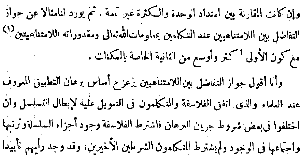
{kind=link}
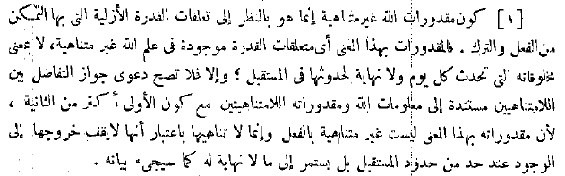
{kind=link}
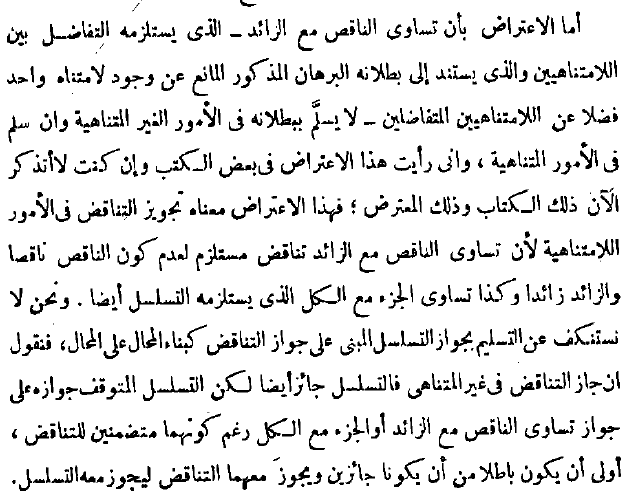
{kind=link}
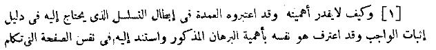
{kind=link}
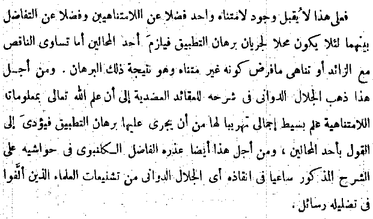
{kind=link}
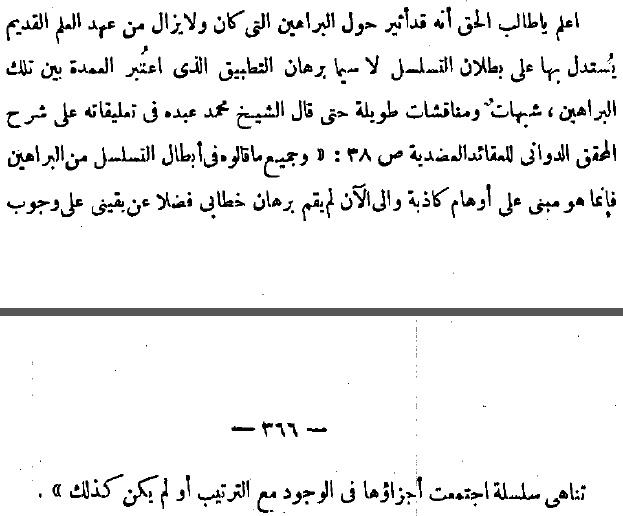
{kind=link}
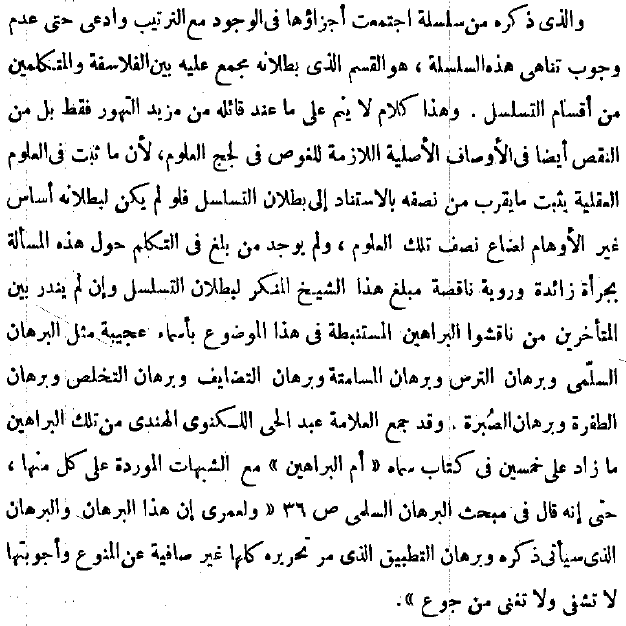
{kind=link}
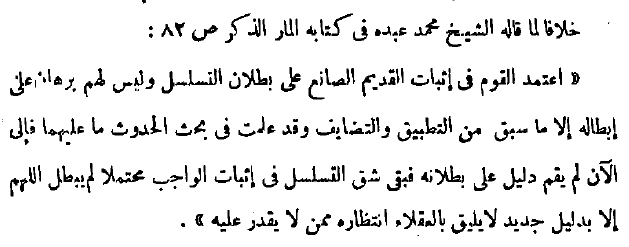
{kind=link}
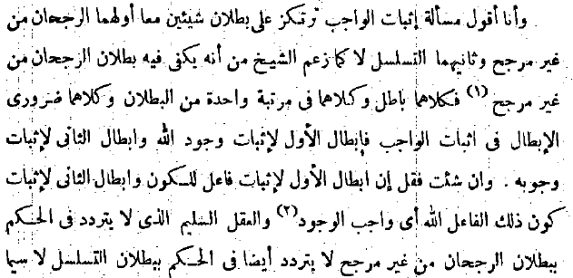
{kind=link}
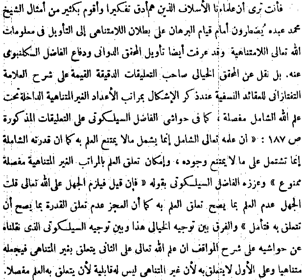
{kind=link}
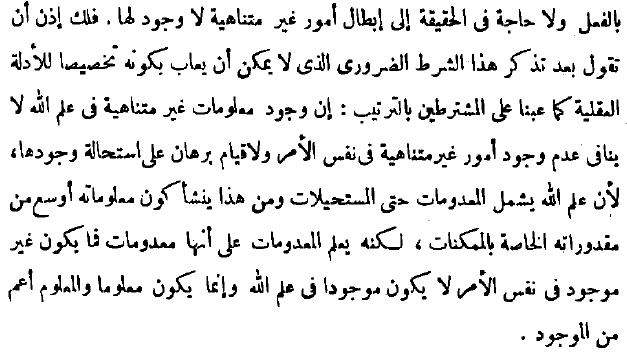
{kind=link}
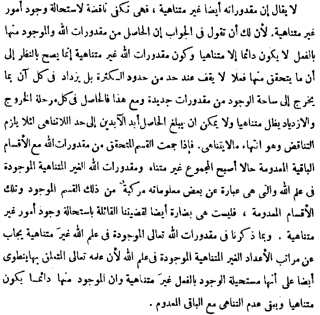
{kind=link}
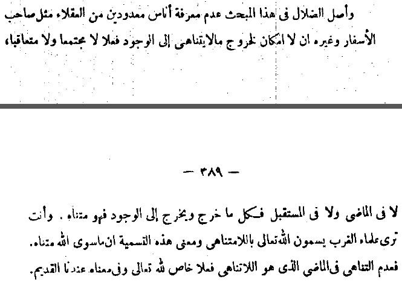
{kind=link}
{kind=link}
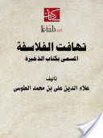
{kind=link}
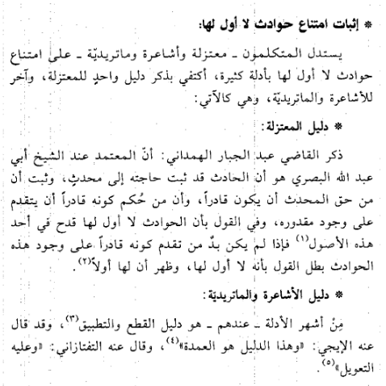
{kind=link}
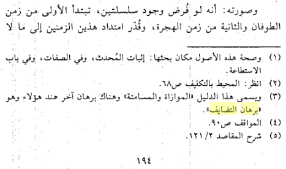
{kind=link}
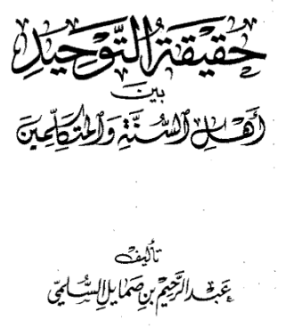
{kind=link}
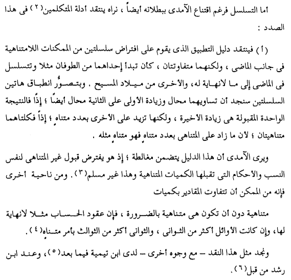
{kind=link}
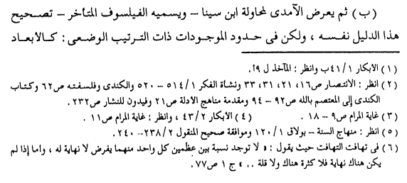
{kind=link}
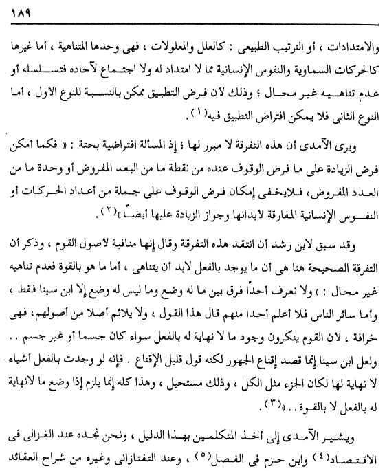
{kind=link}
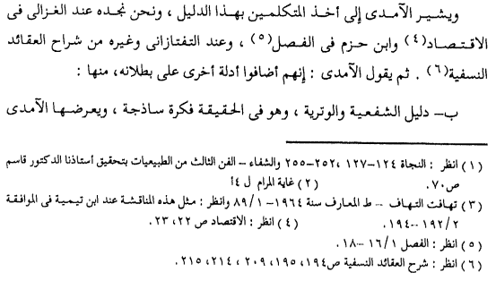
{kind=link}
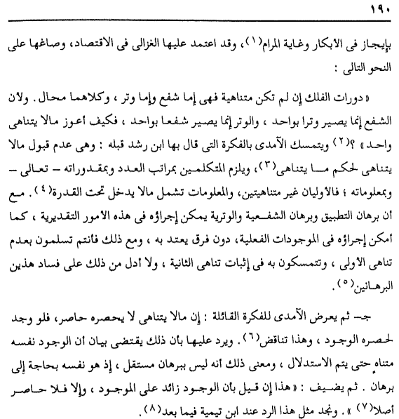
{kind=link}
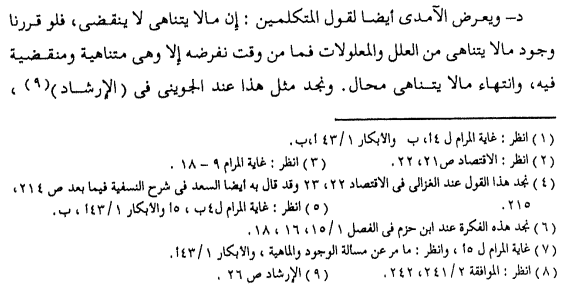
{kind=link}
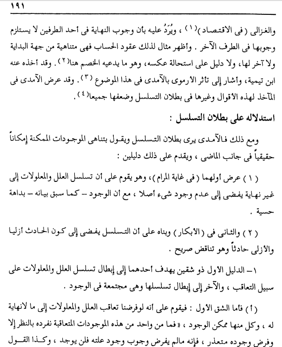
{kind=link}
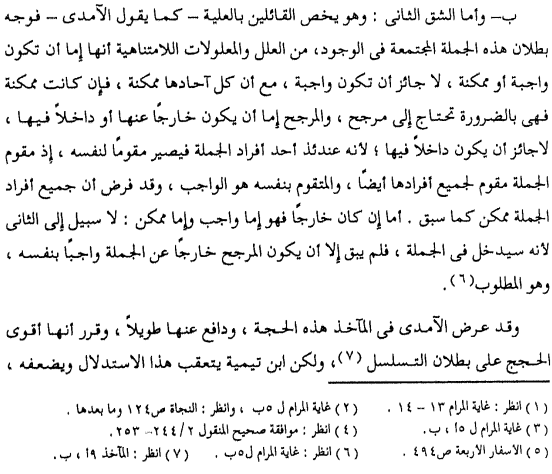
{kind=link}
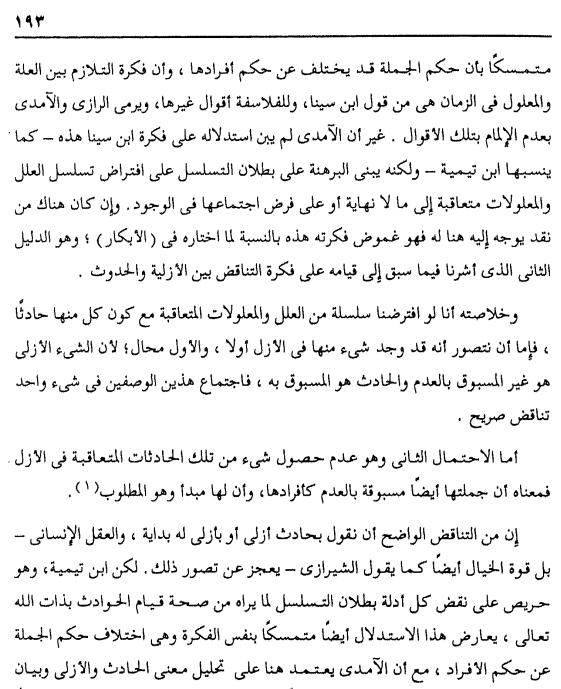
{kind=link}
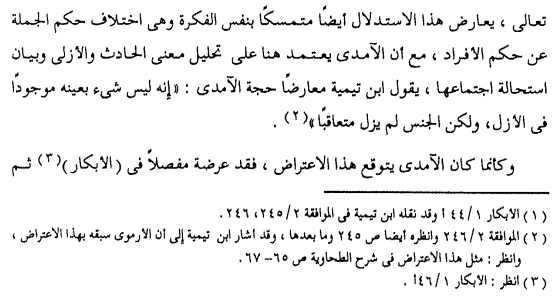
{kind=link}
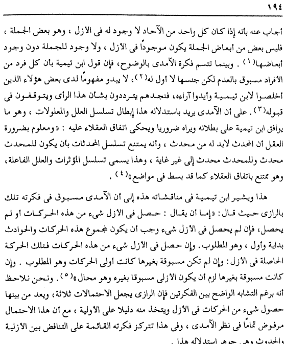
{kind=link}
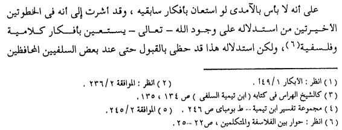
{kind=link}
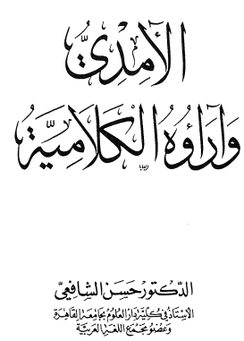
{kind=link}
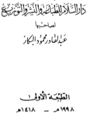
{kind=link}
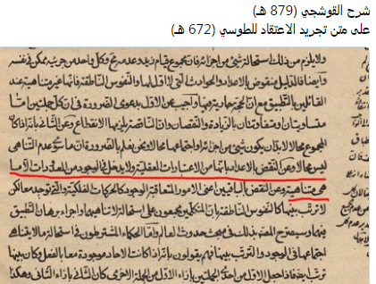
{kind=link}
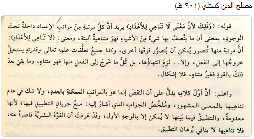
{kind=link}
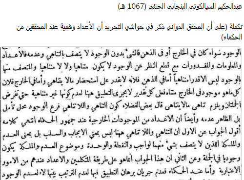
{kind=link}
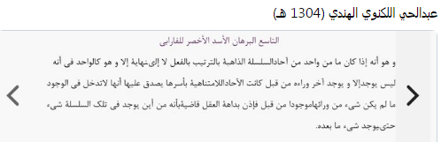
{kind=link}
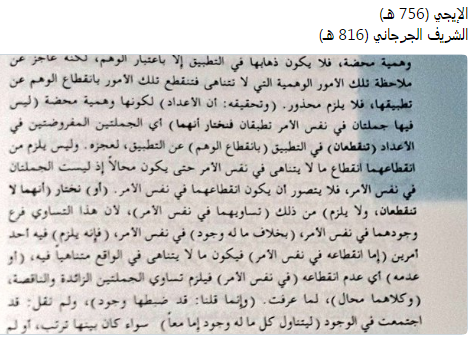
{kind=link}
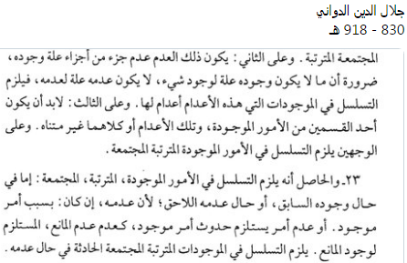
{kind=link}
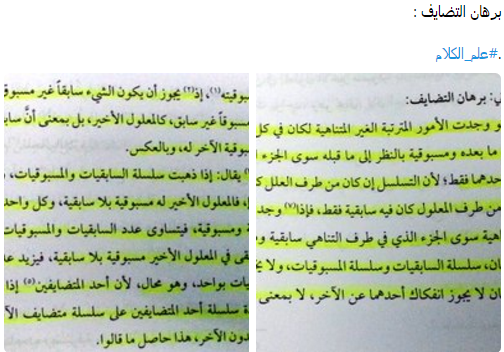
{kind=link}
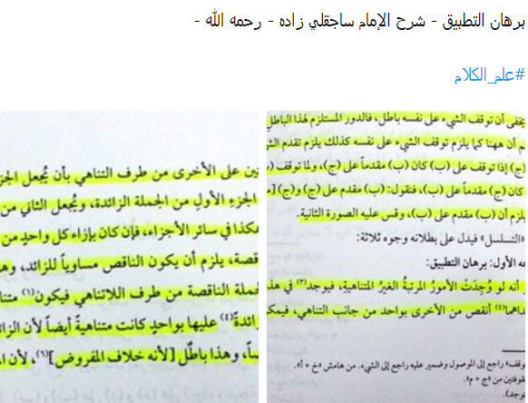
{kind=link}
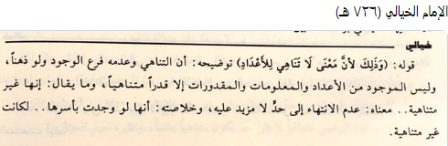